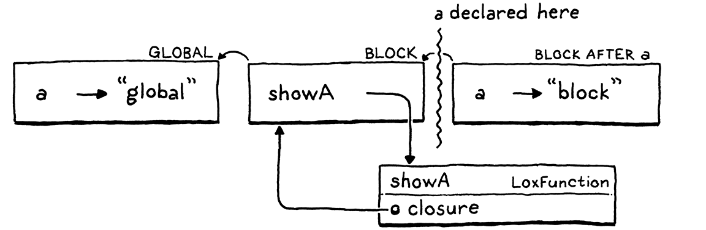

解析和绑定
Once in a while you find yourself in an odd situation. You get into it by degrees and in the most natural way but, when you are right in the midst of it, you are suddenly astonished and ask yourself how in the world it all came about. 你也许偶尔会发现自己处于一种奇怪的情况。你曾以最自然的方式逐渐进入其中，但当你身处其中时，你会突然感到惊讶，并问自己这一切到底是怎么发生的。
Thor Heyerdahl, Kon-Tiki
Oh, no! Our language implementation is taking on water! Way back when we added variables and blocks, we had scoping nice and tight. But when we later added closures, a hole opened in our formerly waterproof interpreter. Most real programs are unlikely to slip through this hole, but as language implementers, we take a sacred vow to care about correctness even in the deepest, dampest corners of the semantics.
We will spend this entire chapter exploring that leak, and then carefully patching it up. In the process, we will gain a more rigorous understanding of lexical scoping as used by Lox and other languages in the C tradition. We’ll also get a chance to learn about semantic analysis—a powerful technique for extracting meaning from the user’s source code without having to run it. 我们将用整整一章的时间来探索这个漏洞，然后小心翼翼地把它补上。在这个过程中，我们将对Lox和其他C语言传统中使用的词法范围有一个更严格的理解。我们还将有机会学习语义分析——这是一种强大的技术，用于从用户的源代码中提取语义而无需运行它。
11 . 1静态作用域
A quick refresher: Lox, like most modern languages, uses lexical scoping. This means that you can figure out which declaration a variable name refers to just by reading the text of the program. For example: 快速复习一下：Lox和大多数现代语言一样，使用词法作用域。这意味着你可以通过阅读代码文本找到变量名字指向的是哪个声明。例如：
var a = "outer"; { var a = "inner"; print a; }
Here, we know that the a being printed is the variable declared on the
previous line, and not the global one. Running the program doesn’t—can’t—affect this. The scope rules are part of the static semantics of the language,
which is why they’re also called static scope.
这里，我们知道打印的a是上一行声明的变量，而不是全局变量。运行代码并不会（也不能）影响这一点。作用域规则是语言的静态语义的一部分，这也就是为什么它们被称为静态作用域。
I haven’t spelled out those scope rules, but now is the time for precision: 我还没有详细说明这些作用域规则，但是现在是时候详细说明一下了：
A variable usage refers to the preceding declaration with the same name in the innermost scope that encloses the expression where the variable is used. *变量指向的是使用变量的表达式外围环境中，前面具有相同名称的最内层作用域中的变量声明。
There’s a lot to unpack in that: 其中有很多东西需要解读：
-
I say “variable usage” instead of “variable expression” to cover both variable expressions and assignments. Likewise with “expression where the variable is used”. 我说的是“变量使用”而不是“变量表达式”，是为了涵盖变量表达式和赋值两种情况。类似于“使用变量的表达式”。
-
“Preceding” means appearing before in the program text. “前面”意味着出现在程序文本之前。
var a = "outer"; { print a; var a = "inner"; }
Here, the
abeing printed is the outer one since it appears before theprintstatement that uses it. In most cases, in straight line code, the declaration preceding in text will also precede the usage in time. But that’s not always true. As we’ll see, functions may defer a chunk of code such that its dynamic temporal execution no longer mirrors the static textual ordering. 这里，打印的a是外层的，因为它在使用该变量的print语句之前。在大多数情况下，在单行代码中，文本中靠前的变量声明在时间上也先于变量使用。但并不总是如此。正如我们将看到的，函数可以推迟代码块，以使其动态执行的时间不受静态文本顺序的约束。 -
“Innermost” is there because of our good friend shadowing. There may be more than one variable with the given name in enclosing scopes, as in: “最内层”之所以存在，是因为我们的好朋友——变量遮蔽的缘故。在外围作用域中可能存在多个具有给定名称的变量。如：
var a = "outer"; { var a = "inner"; print a; }
Our rule disambiguates this case by saying the innermost scope wins. 我们通过优先使用最内层作用域的方式来消除这种歧义。
Since this rule makes no mention of any runtime behavior, it implies that a variable expression always refers to the same declaration through the entire execution of the program. Our interpreter so far mostly implements the rule correctly. But when we added closures, an error snuck in. 由于这条规则没有提及任何运行时行为，它意味着一个变量表达式在程序的整个执行过程中总是指向同一声明。到目前为止，我们的解释器基本正确实现了这一规则。但是当我们添加了闭包后，一个错误悄悄出现了。
var a = "global"; { fun showA() { print a; } showA(); var a = "block"; showA(); }
Before you type this in and run it, decide what you think it should print. 在你执行这段代码之前，先思考一下它应该输出什么。
OK . . . got it? If you’re familiar with closures in other languages, you’ll expect
it to print “global” twice. The first call to showA() should definitely print
“global” since we haven’t even reached the declaration of the inner a yet. And
by our rule that a variable expression always resolves to the same variable,
that implies the second call to showA() should print the same thing.
好的……清楚了吗？如果你熟悉其它语言中的闭包，你可能期望会输出两次“global”。对 showA()的第一次调用肯定会打印 “global”，因为我们甚至还没有执行到内部变量 a 的声明。而根据我们的规则，一个变量表达式总是解析为同一个变量，这意味着对 showA()的第二次调用也应该打印出同样的内容。
Alas, it prints: 唉，它输出的是：
global block
Let me stress that this program never reassigns any variable and contains only a
single print statement. Yet, somehow, that print statement for a
never-assigned variable prints two different values at different points in time.
We definitely broke something somewhere.
我要强调一下，这个代码中从未重新分配任何变量，并且只包含一个print语句。然而，不知何故，对于这个从未分配过的变量，print语句在不同的时间点上打印了两个不同的值。我们肯定在什么地方出了问题。
11 . 1 . 1作用域和可变环境
In our interpreter, environments are the dynamic manifestation of static scopes. The two mostly stay in sync with each other—we create a new environment when we enter a new scope, and discard it when we leave the scope. There is one other operation we perform on environments: binding a variable in one. This is where our bug lies. 在我们的解释器中，环境是静态作用域的动态表现。这两者大多情况下保持同步——当我们进入一个新的作用域时，我们会创建一个新的环境，当我们离开这个作用域时，我们会丢弃它。在环境中还有一个可执行的操作：在环境中绑定一个变量。这就是我们的问题所在。
Let’s walk through that problematic example and see what the environments look
like at each step. First, we declare a in the global scope.
让我们通过这个有问题的例子，看看每一步的环境是什么样的。首先，我们在全局作用域内声明a。

That gives us a single environment with a single variable in it. Then we enter
the block and execute the declaration of showA().
这为我们提供了一个环境，其中只有一个变量。然后我们进入代码块，并执行showA()的声明。
We get a new environment for the block. In that, we declare one name, showA,
which is bound to the LoxFunction object we create to represent the function.
That object has a closure field that captures the environment where the
function was declared, so it has a reference back to the environment for the
block.
我们得到一个对应该代码块的新环境。在这个环境中，我们声明了一个名称showA，它绑定到为表示函数而创建的LoxFunction对象。该对象中有一个closure字段，用于捕获函数声明时的环境，因此它有一个指向该代码块环境的引用。
Now we call showA().
现在我们调用showA()。


The interpreter dynamically creates a new environment for the function body of
showA(). It’s empty since that function doesn’t declare any variables. The
parent of that environment is the function’s closure—the outer block
environment.
解释器为showA()的函数体动态地创建了一个新环境。它是空的，因为该函数没有声明任何变量。该环境的父环境是该函数的闭包——外部的代码块环境。
Inside the body of showA(), we print the value of a. The interpreter looks
up this value by walking the chain of environments. It gets all the way
to the global environment before finding it there and printing "global".
Great.
在showA()函数体中，输出a的值。解释器通过遍历环境链来查找这个值。它会一直到达全局环境，在其中找到变量a并打印“global”。太好了。
Next, we declare the second a, this time inside the block.
接下来，我们声明第二个a，这次是在代码块内。

It’s in the same block—the same scope—as showA(), so it goes into the
same environment, which is also the same environment showA()’s closure refers
to. This is where it gets interesting. We call showA() again.
它和showA()在同一个代码块中——同一个作用域，所以它进入了同一个环境，也就是showA()的闭包所指向的环境。这就是有趣的地方了。我们再次调用showA()。


We create a new empty environment for the body of showA() again, wire it up to
that closure, and run the body. When the interpreter walks the chain of
environments to find a, it now discovers the new a in the block
environment. Boo.
我们再次为showA()的函数体创建了一个新的空环境，将其连接到该闭包，并运行函数体。当解释器遍历环境链去查找a时，它会发现代码块环境中新的变量a。
I chose to implement environments in a way that I hoped would agree with your informal intuition around scopes. We tend to consider all of the code within a block as being within the same scope, so our interpreter uses a single environment to represent that. Each environment is a mutable hash table. When a new local variable is declared, it gets added to the existing environment for that scope. 我选择了一种实现环境的方式，希望它能够与您对作用域的非正式直觉相一致。我们倾向于认为一个块中的所有代码在同一个作用域中，所以我们的解释器使用了一个环境来表示它。每个环境都是一个可变的hash表。当一个新的局部变量被声明时，它会被加入该作用域的现有环境中。
That intuition, like many in life, isn’t quite right. A block is not necessarily all the same scope. Consider: 就像生活中的很多直觉一样，这种直觉并不完全正确。一个代码块并不一定都是同一个作用域。考虑一下：
{
var a;
// 1.
var b;
// 2.
}
At the first marked line, only a is in scope. At the second line, both a and
b are. If you define a “scope” to be a set of declarations, then those are
clearly not the same scope—they don’t contain the same declarations. It’s
like each var statement splits the block into two
separate scopes, the scope before the variable is declared and the one after,
which includes the new variable.
在标记的第一行，作用域中只有a。在第二行时，a和b都在其中。如果将作用域定义为一组声明，那么它们显然不是相同的作用域——它们不包含相同的声明。这就好像是var语句将代码块分割成了两个独立的作用域，变量声明前的作用域和包含新变量的作用域。
But in our implementation, environments do act like the entire block is one scope, just a scope that changes over time. Closures do not like that. When a function is declared, it captures a reference to the current environment. The function should capture a frozen snapshot of the environment as it existed at the moment the function was declared. But instead, in the Java code, it has a reference to the actual mutable environment object. When a variable is later declared in the scope that environment corresponds to, the closure sees the new variable, even though the declaration does not precede the function. 但是在我们的实现中，环境确实表现得像整个代码块是一个作用域，只是这个作用域会随时间变化。而闭包不是这样的。当函数被声明时，它会捕获一个指向当前环境的引用。函数应该捕获一个冻结的环境快照，就像它存在于函数被声明的那一瞬间。但是事实上，在Java代码中，它引用的是一个实际可变的环境对象。当后续在该环境所对应的作用域内声明一个变量时，闭包会看到该变量，即使变量声明没有出现在函数之前。
11 . 1 . 2持久性环境
There is a style of programming that uses what are called persistent data structures. Unlike the squishy data structures you’re familiar with in imperative programming, a persistent data structure can never be directly modified. Instead, any “modification” to an existing structure produces a brand new object that contains all of the original data and the new modification. The original is left unchanged. 有一种编程风格，使用所谓的持久性数据结构。与你在命令式编程中所熟悉的模糊的数据结构不同，持久化数据结构永远不能被直接修改。相应地，对现有结构的任何 “修改 “都会产生一个全新的对象，其中包含所有的原始数据和新的修改。而原有的对象则保持不变。
If we were to apply that technique to Environment, then every time you declared a variable it would return a new environment that contained all of the previously declared variables along with the one new name. Declaring a variable would do the implicit “split” where you have an environment before the variable is declared and one after: 如果我们将这一技术应用于环境，那么每次你声明一个变量时，都会返回一个新的环境，其中包含所有先前声明的变量和一个新名称。声明一个变量会执行隐式分割，在声明变量之前与之后都有一个环境：
A closure retains a reference to the Environment instance in play when the function was declared. Since any later declarations in that block would produce new Environment objects, the closure wouldn’t see the new variables and our bug would be fixed. 当函数被声明时，闭包保留对正在运行的Environment实例的引用。由于该代码块中后续的任何声明都会生成新的Environment对象，闭包就不会看到新的变量，我们的问题也得到修复。
This is a legit way to solve the problem, and it’s the classic way to implement environments in Scheme interpreters. We could do that for Lox, but it would mean going back and changing a pile of existing code. 这是解决该问题的合法方式，也是在Scheme解释器中实现变量环境的经典方式。对于Lox，我们可以这样做，但是这意味着要回头修改一大堆现有的代码。
I won’t drag you through that. We’ll keep the way we represent environments the same. Instead of making the data more statically structured, we’ll bake the static resolution into the access operation itself. 我不会把你拖下水的。我们将保持表示环境的方式不变。我们不会让数据变得更加静态结构化，而是将静态解析嵌入访问操作本身。
11 . 2语义分析
Our interpreter resolves a variable—tracks down which declaration it refers to—each and every time the variable expression is evaluated. If that variable is swaddled inside a loop that runs a thousand times, that variable gets re-resolved a thousand times. 我们的解释器每次对变量表达式求值时，都会解析变量——追踪它所指向的声明。如果这个变量被包在一个运行1000次的循环中，那么该变量就会被重复解析1000次。
We know static scope means that a variable usage always resolves to the same declaration, which can be determined just by looking at the text. Given that, why are we doing it dynamically every time? Doing so doesn’t just open the hole that leads to our annoying bug, it’s also needlessly slow. 我们知道静态作用域意味着一个变量的使用总是解析到同一个声明，而且可以通过查看文本来确定。既然如此，我们为什么每次都要动态地解析呢？这样做不仅仅导致了这个恼人的bug，而且也造成了不必要的低效。
A better solution is to resolve each variable use once. Write a chunk of code that inspects the user’s program, finds every variable mentioned, and figures out which declaration each refers to. This process is an example of a semantic analysis. Where a parser tells only if a program is grammatically correct (a syntactic analysis), semantic analysis goes farther and starts to figure out what pieces of the program actually mean. In this case, our analysis will resolve variable bindings. We’ll know not just that an expression is a variable, but which variable it is. 一个更好的解决方案是一次性解析每个变量的使用。编写一段代码，检查用户的程序，找到所提到的每个变量，并找出每个变量引用的是哪个声明。这个过程是语义分析的一个例子。解析器只能分析程序在语法上是否正确(语法分析)，而语义分析则更进一步，开始弄清楚程序的各个部分的实际含义。在这种情况下，我们的分析将解决变量绑定的问题。我们不仅要知道一个表达式是一个变量，还要知道它是哪个变量。
There are a lot of ways we could store the binding between a variable and its declaration. When we get to the C interpreter for Lox, we’ll have a much more efficient way of storing and accessing local variables. But for jlox, I want to minimize the collateral damage we inflict on our existing codebase. I’d hate to throw out a bunch of mostly fine code. 有很多方法可以存储变量及其声明直接的绑定关系。当我们使用Lox的C解释器时，我们将有一种更有效的方式来存储和访问局部变量。但是对于jlox来说，我想尽量减少对现有代码库的附带损害。我不希望扔掉一堆基本上都很好的代码。
Instead, we’ll store the resolution in a way that makes the most out of our
existing Environment class. Recall how the accesses of a are interpreted in
the problematic example.
相对地，我们将以最充分利用现有Environment类的方式来存储解析结果。回想一下，在有问题的例子中，a的访问是如何被解释的。

In the first (correct) evaluation, we look at three environments in the chain
before finding the global declaration of a. Then, when the inner a is later
declared in a block scope, it shadows the global one.
在第一次（正确的）求值中，我们会检查链中的环境，并找到a的全局声明。然后，当内部的a在块作用域中声明时，它会遮蔽全局的变量a。

The next lookup walks the chain, finds a in the second environment and
stops there. Each environment corresponds to a single lexical scope where
variables are declared. If we could ensure a variable lookup always walked the
same number of links in the environment chain, that would ensure that it
found the same variable in the same scope every time.
下一次查找会遍历环境链，在第二个环境中找到a并停止。每个环境都对应于一个声明变量的词法作用域。如果我们能够保证变量查找总是在环境链上遍历相同数量的链接，也就可以保证每次都可以在相同的作用域中找到相同的变量。
To “resolve” a variable usage, we only need to calculate how many “hops” away the declared variable will be in the environment chain. The interesting question is when to do this calculation—or, put differently, where in our interpreter’s implementation do we stuff the code for it? 要“解析”一个变量使用，我们只需要计算声明的变量在环境链中有多少“跳”。有趣的问题是在什么时候进行这个计算——或者换句话说，在解释器的实现中，这段代码要添加到什么地方？
Since we’re calculating a static property based on the structure of the source code, the obvious answer is in the parser. That is the traditional home, and is where we’ll put it later in clox. It would work here too, but I want an excuse to show you another technique. We’ll write our resolver as a separate pass. 因为我们是根据源代码的结构来计算一个静态属性，所以答案显然是在解析器中。那是传统的选择，也是我们以后在 clox 中实现它的地方。在这里同样也适用，但是我想给你展示另一种技巧。我们会单独写一个解析器。
11 . 2 . 1变量解析过程
After the parser produces the syntax tree, but before the interpreter starts executing it, we’ll do a single walk over the tree to resolve all of the variables it contains. Additional passes between parsing and execution are common. If Lox had static types, we could slide a type checker in there. Optimizations are often implemented in separate passes like this too. Basically, any work that doesn’t rely on state that’s only available at runtime can be done in this way. 在解析器生成语法树之后，解释器执行语法树之前，我们会对语法树再进行一次遍历，以解析其中包含的变量。在解析和执行之间的额外遍历是很常见的。如果Lox中有静态类型，我们可以插入一个类型检查器。优化也经常是在类似单独的遍历过程中实现的。基本上，任何不依赖于运行时状态的工作都可以通过这种方式完成。
Our variable resolution pass works like a sort of mini-interpreter. It walks the tree, visiting each node, but a static analysis is different from a dynamic execution: 我们的变量解析工作就像一个小型的解释器。它会遍历整棵树，访问每个节点，但是静态分析与动态执行还是不同的：
-
There are no side effects. When the static analysis visits a print statement, it doesn’t actually print anything. Calls to native functions or other operations that reach out to the outside world are stubbed out and have no effect. 没有副作用。当静态分析处理一个
print语句时，它并不会打印任何东西。对本地函数或其它与外部世界联系的操作也会被终止，并且没有任何影响。 -
There is no control flow. Loops are visited only once. Both branches are visited in
ifstatements. Logic operators are not short-circuited. 没有控制流。循环只会被处理一次，if语句中的两个分支都会处理，逻辑操作符也不会做短路处理。
11 . 3Resolver类
Like everything in Java, our variable resolution pass is embodied in a class. 与Java中的所有内容一样，我们将变量解析处理也放在一个类中。
create new file
package com.craftinginterpreters.lox; import java.util.HashMap; import java.util.List; import java.util.Map; import java.util.Stack; class Resolver implements Expr.Visitor<Void>, Stmt.Visitor<Void> { private final Interpreter interpreter; Resolver(Interpreter interpreter) { this.interpreter = interpreter; } }
Since the resolver needs to visit every node in the syntax tree, it implements the visitor abstraction we already have in place. Only a few kinds of nodes are interesting when it comes to resolving variables: 因为解析器需要处理语法树中的每个节点，所以它实现了我们已有的访问者抽象。在解析变量时，有几个节点是比较特殊的：
-
A block statement introduces a new scope for the statements it contains. 块语句为它所包含的语句引入了一个新的作用域。
-
A function declaration introduces a new scope for its body and binds its parameters in that scope. 函数声明为其函数体引入了一个新的作用域，并在该作用域中绑定了它的形参。
-
A variable declaration adds a new variable to the current scope. 变量声明将一个新变量加入到当前作用域中。
-
Variable and assignment expressions need to have their variables resolved. 变量定义和赋值表达式需要解析它们的变量值。
The rest of the nodes don’t do anything special, but we still need to implement
visit methods for them that traverse into their subtrees. Even though a +
expression doesn’t itself have any variables to resolve, either of its
operands might.
其余的节点不做任何特别的事情，但是我们仍然需要为它们实现visit方法，以遍历其子树。尽管+表达式本身没有任何变量需要解析，但是它的任一操作数都可能需要。
11 . 3 . 1解析代码块
We start with blocks since they create the local scopes where all the magic happens. 我们从块语法开始，因为它们创建了局部作用域——魔法出现的地方。
add after Resolver()
@Override public Void visitBlockStmt(Stmt.Block stmt) { beginScope(); resolve(stmt.statements); endScope(); return null; }
This begins a new scope, traverses into the statements inside the block, and then discards the scope. The fun stuff lives in those helper methods. We start with the simple one. 这里会开始一个新的作用域，遍历块中的语句，然后丢弃该作用域。有趣的部分都在这些辅助方法中。我们先看一个简单的。
add after Resolver()
void resolve(List<Stmt> statements) { for (Stmt statement : statements) { resolve(statement); } }
This walks a list of statements and resolves each one. It in turn calls: 它会遍历语句列表，并解析其中每一条语句。它会进一步调用：
add after visitBlockStmt()
private void resolve(Stmt stmt) { stmt.accept(this); }
While we’re at it, let’s add another overload that we’ll need later for resolving an expression. 在此过程中，让我们添加一个后续解析表达式时会用到的重载方法。
add after resolve(Stmt stmt)
private void resolve(Expr expr) { expr.accept(this); }
These methods are similar to the evaluate() and execute() methods in
Interpreter—they turn around and apply the Visitor pattern to the given
syntax tree node.
这些方法与解释器中的 evaluate()和execute()方法类似——它们会反过来将访问者模式应用到语法树节点。
The real interesting behavior is around scopes. A new block scope is created like so: 真正有趣的部分是围绕作用域的。一个新的块作用域是这样创建的：
add after resolve()
private void beginScope() { scopes.push(new HashMap<String, Boolean>()); }
Lexical scopes nest in both the interpreter and the resolver. They behave like a stack. The interpreter implements that stack using a linked list—the chain of Environment objects. In the resolver, we use an actual Java Stack. 词法作用域在解释器和解析器中都有使用。它们的行为像一个栈。解释器是使用链表（Environment对象组成的链）来实现栈的，在解析器中，我们使用一个真正的Java Stack。
private final Interpreter interpreter;
in class Resolver
private final Stack<Map<String, Boolean>> scopes = new Stack<>();
Resolver(Interpreter interpreter) {
This field keeps track of the stack of scopes currently, uh, in scope. Each element in the stack is a Map representing a single block scope. Keys, as in Environment, are variable names. The values are Booleans, for a reason I’ll explain soon. 这个字段会记录当前作用域内的栈。栈中的每个元素是代表一个块作用域的Map。与Environment中一样，键是变量名。值是布尔值，原因我很快会解释。
The scope stack is only used for local block scopes. Variables declared at the top level in the global scope are not tracked by the resolver since they are more dynamic in Lox. When resolving a variable, if we can’t find it in the stack of local scopes, we assume it must be global. 作用域栈只用于局部块作用域。解析器不会跟踪在全局作用域的顶层声明的变量，因为它们在Lox中是更动态的。当解析一个变量时，如果我们在本地作用域栈中找不到它，我们就认为它一定是全局的。
Since scopes are stored in an explicit stack, exiting one is straightforward. 由于作用域被存储在一个显式的栈中，退出作用域很简单。 lox/Resolver.java，在 beginScope()方法后添加：
add after beginScope()
private void endScope() { scopes.pop(); }
Now we can push and pop a stack of empty scopes. Let’s put some things in them. 现在我们可以在一个栈中压入和弹出一个空作用域，接下来我们往里面放些内容。
11 . 3 . 2解析变量声明
Resolving a variable declaration adds a new entry to the current innermost scope’s map. That seems simple, but there’s a little dance we need to do. 解析一个变量声明，会在当前最内层的作用域map中添加一个新的条目。这看起来很简单，但是我们需要做一些小动作。
add after visitBlockStmt()
@Override public Void visitVarStmt(Stmt.Var stmt) { declare(stmt.name); if (stmt.initializer != null) { resolve(stmt.initializer); } define(stmt.name); return null; }
We split binding into two steps, declaring then defining, in order to handle funny edge cases like this: 我们将绑定分为两个步骤，先声明，然后定义，以便处理类似下面这样的边界情况：
var a = "outer"; { var a = a; }
What happens when the initializer for a local variable refers to a variable with the same name as the variable being declared? We have a few options: 当局部变量的初始化式指向一个与当前声明变量名称相同的变量时，会发生什么？我们有几个选择：
-
Run the initializer, then put the new variable in scope. Here, the new local
awould be initialized with “outer”, the value of the global one. In other words, the previous declaration would desugar to:1 运行初始化式，然后将新的变量放入作用域中。 在这个例子中，新的局部变量a会使用“outer”（全局变量a的值）初始化。换句话说，前面的声明脱糖后如下：var temp = a; // Run the initializer. var a; // Declare the variable. a = temp; // Initialize it.
-
Put the new variable in scope, then run the initializer. This means you could observe a variable before it’s initialized, so we would need to figure out what value it would have then. Probably
nil. That means the new localawould be re-initialized to its own implicitly initialized value,nil. Now the desugaring would look like: 将新的变量放入作用域中，然后运行初始化式。 这意味着你可以在变量被初始化之前观察到它，所以当我们需要计算出它的值时，这个值其实是nil。这意味着新的局部变量a将被重新初始化为它自己的隐式初始化值nil。现在，脱糖后的结果如下：var a; // Define the variable. a = a; // Run the initializer.
-
Make it an error to reference a variable in its initializer. Have the interpreter fail either at compile time or runtime if an initializer mentions the variable being initialized.
在初始化式中引用一个变量是错误的。 如果初始化式使用了要初始化的变量，则解释器在编译时或运行时都会失败。
Do either of those first two options look like something a user actually wants? Shadowing is rare and often an error, so initializing a shadowing variable based on the value of the shadowed one seems unlikely to be deliberate. 前两个选项中是否有用户真正想要的？变量遮蔽很少见，而且通常是一个错误，所以根据被遮蔽的变量值来初始化一个遮蔽的变量，似乎不太可能是有意为之。
The second option is even less useful. The new variable will always have the
value nil. There is never any point in mentioning it by name. You could use an
explicit nil instead.
第二个选项就更没用了。新变量的值总是nil。通过名称来引用没有任何意义。你可以使用一个隐式的nil来代替。
Since the first two options are likely to mask user errors, we’ll take the third. Further, we’ll make it a compile error instead of a runtime one. That way, the user is alerted to the problem before any code is run. 由于前两个选项可能会掩盖用户的错误，我们将采用第三个选项。此外，我们要将其作为一个编译错误而不是运行时错误。这样一来，在代码运行之前，用户就会收到该问题的警报。
In order to do that, as we visit expressions, we need to know if we’re inside the initializer for some variable. We do that by splitting binding into two steps. The first is declaring it. 要做到这一点，当我们访问表达式时，我们需要知道当前是否在某个变量的初始化式中。我们通过将绑定拆分为两步来实现。首先是声明。
add after endScope()
private void declare(Token name) { if (scopes.isEmpty()) return; Map<String, Boolean> scope = scopes.peek(); scope.put(name.lexeme, false); }
Declaration adds the variable to the innermost scope so that it shadows any
outer one and so that we know the variable exists. We mark it as “not ready yet”
by binding its name to false in the scope map. The value associated with a key
in the scope map represents whether or not we have finished resolving that
variable’s initializer.
声明将变量添加到最内层的作用域，这样它就会遮蔽任何外层作用域，我们也就知道了这个变量的存在。我们通过在作用域map中将其名称绑定到false来表明该变量“尚未就绪”。作用域map中与key相关联的值代表的是我们是否已经结束了对变量初始化式的解析。
After declaring the variable, we resolve its initializer expression in that same scope where the new variable now exists but is unavailable. Once the initializer expression is done, the variable is ready for prime time. We do that by defining it. 在声明完变量后，我们在变量当前存在但是不可用的作用域中解析变量的初始化表达式。一旦初始化表达式完成，变量也就绪了。我们通过define来实现。
add after declare()
private void define(Token name) { if (scopes.isEmpty()) return; scopes.peek().put(name.lexeme, true); }
We set the variable’s value in the scope map to true to mark it as fully
initialized and available for use. It’s alive!
我们在作用域map中将变量的值置为true，以标记它已完全初始化并可使用。它有了生命！
11 . 3 . 3解析变量表达式
Variable declarations—and function declarations, which we’ll get to—write to the scope maps. Those maps are read when we resolve variable expressions. 变量声明——以及我们即将讨论的函数声明——会向作用域map中写数据。在我们解析变量表达式时，需要读取这些map。
add after visitVarStmt()
@Override public Void visitVariableExpr(Expr.Variable expr) { if (!scopes.isEmpty() && scopes.peek().get(expr.name.lexeme) == Boolean.FALSE) { Lox.error(expr.name, "Can't read local variable in its own initializer."); } resolveLocal(expr, expr.name); return null; }
First, we check to see if the variable is being accessed inside its own
initializer. This is where the values in the scope map come into play. If the
variable exists in the current scope but its value is false, that means we
have declared it but not yet defined it. We report that error.
首先，我们要检查变量是否在其自身的初始化式中被访问。这也就是作用域map中的值发挥作用的地方。如果当前作用域中存在该变量，但是它的值是false，意味着我们已经声明了它，但是还没有定义它。我们会报告一个错误出来。
After that check, we actually resolve the variable itself using this helper: 在检查之后，我们实际上使用了这个辅助方法来解析变量：
add after define()
private void resolveLocal(Expr expr, Token name) { for (int i = scopes.size() - 1; i >= 0; i--) { if (scopes.get(i).containsKey(name.lexeme)) { interpreter.resolve(expr, scopes.size() - 1 - i); return; } } }
This looks, for good reason, a lot like the code in Environment for evaluating a variable. We start at the innermost scope and work outwards, looking in each map for a matching name. If we find the variable, we resolve it, passing in the number of scopes between the current innermost scope and the scope where the variable was found. So, if the variable was found in the current scope, we pass in 0. If it’s in the immediately enclosing scope, 1. You get the idea. 这看起来很像是Environment中对变量求值的代码。我们从最内层的作用域开始，向外扩展，在每个map中寻找一个可以匹配的名称。如果我们找到了这个变量，我们就对其解析，传入当前最内层作用域和变量所在作用域之间的作用域的数量。所以，如果变量在当前作用域中找到该变量，则传入0；如果在紧邻的外网作用域中找到，则传1。明白了吧。
If we walk through all of the block scopes and never find the variable, we leave
it unresolved and assume it’s global. We’ll get to the implementation of that
resolve() method a little later. For now, let’s keep on cranking through the
other syntax nodes.
如果我们遍历了所有的作用域也没有找到这个变量，我们就不解析它，并假定它是一个全局变量。稍后我们将讨论resolve()方法的实现。现在，让我们继续浏览其他语法节点。
11 . 3 . 4解析赋值表达式
The other expression that references a variable is assignment. Resolving one looks like this: 另一个引用变量的表达式就是赋值表达式。解析方法如下：
add after visitVarStmt()
@Override public Void visitAssignExpr(Expr.Assign expr) { resolve(expr.value); resolveLocal(expr, expr.name); return null; }
First, we resolve the expression for the assigned value in case it also contains
references to other variables. Then we use our existing resolveLocal() method
to resolve the variable that’s being assigned to.
首先，我们解析右值的表达式，以防它还包含对其它变量的引用。然后使用现有的 resolveLocal() 方法解析待赋值的变量。
11 . 3 . 5解析函数声明
Finally, functions. Functions both bind names and introduce a scope. The name of the function itself is bound in the surrounding scope where the function is declared. When we step into the function’s body, we also bind its parameters into that inner function scope. 最后是函数。函数既绑定名称又引入了作用域。函数本身的名称被绑定在函数声明时所在的作用域中。当我们进入函数体时，我们还需要将其参数绑定到函数内部作用域中。
add after visitBlockStmt()
@Override public Void visitFunctionStmt(Stmt.Function stmt) { declare(stmt.name); define(stmt.name); resolveFunction(stmt); return null; }
Similar to visitVariableStmt(), we declare and define the name of the function
in the current scope. Unlike variables, though, we define the name eagerly,
before resolving the function’s body. This lets a function recursively refer to
itself inside its own body.
与visitVariableStmt()类似，我们在当前作用域中声明并定义函数的名称。与变量不同的是，我们在解析函数体之前，就急切地定义了这个名称。这样函数就可以在自己的函数体中递归地使用自身。
Then we resolve the function’s body using this: 那么我们可以使用下面的方法来解析函数体：
add after resolve()
private void resolveFunction(Stmt.Function function) { beginScope(); for (Token param : function.params) { declare(param); define(param); } resolve(function.body); endScope(); }
It’s a separate method since we will also use it for resolving Lox methods when we add classes later. It creates a new scope for the body and then binds variables for each of the function’s parameters. 这是一个单独的方法，因为我们以后添加类时，还需要使用它来解析Lox方法。它为函数体创建一个新的作用域，然后为函数的每个参数绑定变量。
Once that’s ready, it resolves the function body in that scope. This is different from how the interpreter handles function declarations. At runtime, declaring a function doesn’t do anything with the function’s body. The body doesn’t get touched until later when the function is called. In a static analysis, we immediately traverse into the body right then and there. 一旦就绪，它就会在这个作用域中解析函数体。这与解释器处理函数声明的方式不同。在运行时，声明一个函数不会对函数体做任何处理。直到后续函数被调用时，才会触及主体。在静态分析中，我们会立即遍历函数体。
11 . 3 . 6解析其它语法树节点
That covers the interesting corners of the grammars. We handle every place where a variable is declared, read, or written, and every place where a scope is created or destroyed. Even though they aren’t affected by variable resolution, we also need visit methods for all of the other syntax tree nodes in order to recurse into their subtrees. Sorry this bit is boring, but bear with me. We’ll go kind of “top down” and start with statements. 这涵盖了语法中很多有趣的部分。我们处理了声明、读取、写入遍历，创建、销毁作用域的部分。虽然其它部分不受遍历解析的影响，我们也需要为其它语法树节点提供visit方法，以便递归到它们的子树。抱歉，这部分内容很枯燥，但请耐心听我讲。我们采用“自上而下”的方式，从语句开始。
An expression statement contains a single expression to traverse. 一个表达式语句中包含一个需要遍历的表达式。
add after visitBlockStmt()
@Override public Void visitExpressionStmt(Stmt.Expression stmt) { resolve(stmt.expression); return null; }
An if statement has an expression for its condition and one or two statements
for the branches.
if语句包含一个条件表达式，以及一个或两个分支语句。
add after visitFunctionStmt()
@Override public Void visitIfStmt(Stmt.If stmt) { resolve(stmt.condition); resolve(stmt.thenBranch); if (stmt.elseBranch != null) resolve(stmt.elseBranch); return null; }
Here, we see how resolution is different from interpretation. When we resolve an
if statement, there is no control flow. We resolve the condition and both
branches. Where a dynamic execution steps only into the branch that is run, a
static analysis is conservative—it analyzes any branch that could be run.
Since either one could be reached at runtime, we resolve both.
在这里，我们可以看到解析与解释是不同的。当我们解析if语句时，没有控制流。我们会解析条件表达式和两个分支表达式。动态执行则只会进入正在执行的分支，而静态分析是保守的——它会分析所有可能执行的分支。因为任何一个分支在运行时都可能被触及，所以我们要对两者都进行解析。
Like expression statements, a print statement contains a single subexpression.
与表达式语句类似，print语句也包含一个子表达式。
add after visitIfStmt()
@Override public Void visitPrintStmt(Stmt.Print stmt) { resolve(stmt.expression); return null; }
Same deal for return.
return语句也是相同的。
add after visitPrintStmt()
@Override public Void visitReturnStmt(Stmt.Return stmt) { if (stmt.value != null) { resolve(stmt.value); } return null; }
As in if statements, with a while statement, we resolve its condition and
resolve the body exactly once.
与if语句一样，对于while语句，我们会解析其条件，并解析一次循环体。
add after visitVarStmt()
@Override public Void visitWhileStmt(Stmt.While stmt) { resolve(stmt.condition); resolve(stmt.body); return null; }
That covers all the statements. On to expressions . . . 这样就涵盖了所有的语句。接下来是表达式……
Our old friend the binary expression. We traverse into and resolve both operands. 我们的老朋友二元表达式。我们要遍历并解析两个操作数。
add after visitAssignExpr()
@Override public Void visitBinaryExpr(Expr.Binary expr) { resolve(expr.left); resolve(expr.right); return null; }
Calls are similar—we walk the argument list and resolve them all. The thing being called is also an expression (usually a variable expression), so that gets resolved too. 调用也是类似的——我们遍历参数列表并解析它们。被调用的对象也是一个表达式（通常是一个变量表达式），所以它也会被解析。
add after visitBinaryExpr()
@Override public Void visitCallExpr(Expr.Call expr) { resolve(expr.callee); for (Expr argument : expr.arguments) { resolve(argument); } return null; }
Parentheses are easy. 括号表达式比较简单。
add after visitCallExpr()
@Override public Void visitGroupingExpr(Expr.Grouping expr) { resolve(expr.expression); return null; }
Literals are easiest of all. 字面量表达式是最简单的。
add after visitGroupingExpr()
@Override public Void visitLiteralExpr(Expr.Literal expr) { return null; }
A literal expression doesn’t mention any variables and doesn’t contain any subexpressions so there is no work to do. 字面表达式中没有使用任何变量，也不包含任何子表达式，所以也不需要做任何事情。
Since a static analysis does no control flow or short-circuiting, logical expressions are exactly the same as other binary operators. 因为静态分析没有控制流或短路处理，逻辑表达式与其它的二元运算符是一样的。
add after visitLiteralExpr()
@Override public Void visitLogicalExpr(Expr.Logical expr) { resolve(expr.left); resolve(expr.right); return null; }
And, finally, the last node. We resolve its one operand. 接下来是最后一个节点，我们解析它的一个操作数。
add after visitLogicalExpr()
@Override public Void visitUnaryExpr(Expr.Unary expr) { resolve(expr.right); return null; }
With all of these visit methods, the Java compiler should be satisfied that Resolver fully implements Stmt.Visitor and Expr.Visitor. Now is a good time to take a break, have a snack, maybe a little nap. 有了这些visit方法，Java编译器应该会认为Resolver完全实现了Stmt.Visitor 和 Expr.Visitor。现在是时候休息一下了。
11 . 4解释已解析的变量
Let’s see what our resolver is good for. Each time it visits a variable, it tells the interpreter how many scopes there are between the current scope and the scope where the variable is defined. At runtime, this corresponds exactly to the number of environments between the current one and the enclosing one where the interpreter can find the variable’s value. The resolver hands that number to the interpreter by calling this: 让我们看看解析器有什么用处。每次访问一个变量时，它都会告诉解释器，在当前作用域和变量定义的作用域之间隔着多少层作用域。在运行时，这正好对应于当前环境与解释器可以找到变量值的外围环境之间的environments数量。解析器通过调用下面的方法将这个数字传递给解释器：
add after execute()
void resolve(Expr expr, int depth) { locals.put(expr, depth); }
We want to store the resolution information somewhere so we can use it when the variable or assignment expression is later executed, but where? One obvious place is right in the syntax tree node itself. That’s a fine approach, and that’s where many compilers store the results of analyses like this. 我们要把解析信息存储在某个地方，这样在执行变量表达式和赋值表达式时就可以使用它，但是要存在哪里呢？一个明显的位置就是语法树节点本身。这是一个很好的方法，许多编译器都是在这里存储类似的分析结果的。
We could do that, but it would require mucking around with our syntax tree generator. Instead, we’ll take another common approach and store it off to the side in a map that associates each syntax tree node with its resolved data. 我们可以这样做，但是需要对我们的语法树生成器进行修改。相反，我们会采用另一种常见的方法，将其存储在一个map中，将每个语法树节点与其解析的数据关联起来。
Interactive tools like IDEs often incrementally reparse and re-resolve parts of the user’s program. It may be hard to find all of the bits of state that need recalculating when they’re hiding in the foliage of the syntax tree. A benefit of storing this data outside of the nodes is that it makes it easy to discard it—simply clear the map. 像IDE这种的交互式工具经常会增量地对用户的部分代码进行重新分析和解析。当这些状态隐藏在语法树的枝叶中时，可能很难找到所有需要重新计算的状态。将这些数据存储在节点之外的好处之一就是，可以很容易地丢弃这部分数据——只需要清除map即可。 lox/Interpreter.java，在 Interpreter类中添加
private Environment environment = globals;
in class Interpreter
private final Map<Expr, Integer> locals = new HashMap<>();
Interpreter() {
You might think we’d need some sort of nested tree structure to avoid getting confused when there are multiple expressions that reference the same variable, but each expression node is its own Java object with its own unique identity. A single monolithic map doesn’t have any trouble keeping them separated. 你可能认为我们需要某种嵌套的树状结构，以避免在有多个表达式引用同一个变量时出现混乱，但是每个表达式节点都有其对应的Java对象，具有唯一性标识。一个简单的map就足以将它们全部区分开来。
As usual, using a collection requires us to import a couple of names. 与之前一样，使用集合需要先引入一些包名称。
import java.util.ArrayList;
import java.util.HashMap;
import java.util.List;
And:
import java.util.List;
import java.util.Map;
class Interpreter implements Expr.Visitor<Object>,
11 . 4 . 1访问已解析的变量
Our interpreter now has access to each variable’s resolved location. Finally, we get to make use of that. We replace the visit method for variable expressions with this: 我们的解释器现在可以访问每个变量的解析位置。最后，我们可以利用这一点了，将变量表达式的visit方法替换如下：
public Object visitVariableExpr(Expr.Variable expr) {
in visitVariableExpr()
replace 1 line
return lookUpVariable(expr.name, expr);
}
That delegates to: 这里引用了：
add after visitVariableExpr()
private Object lookUpVariable(Token name, Expr expr) { Integer distance = locals.get(expr); if (distance != null) { return environment.getAt(distance, name.lexeme); } else { return globals.get(name); } }
There are a couple of things going on here. First, we look up the resolved
distance in the map. Remember that we resolved only local variables. Globals
are treated specially and don’t end up in the map (hence the name locals). So,
if we don’t find a distance in the map, it must be global. In that case, we
look it up, dynamically, directly in the global environment. That throws a
runtime error if the variable isn’t defined.
这里有几件事要做。首先，我们在map中查找已解析的距离值。要记住，我们只解析了本地变量。全局变量被特殊处理了，不会出现了map中（所以它的名字叫locals）。所以，如果我们没有在map中找到变量对应的距离值，它一定是全局变量。在这种情况下，我们直接在全局environment中查找。如果变量没有被定义，就会产生一个运行时错误。
If we do get a distance, we have a local variable, and we get to take
advantage of the results of our static analysis. Instead of calling get(), we
call this new method on Environment:
如果我们确实查到了一个距离值，那这就是个局部变量，我们可以利用静态分析的结果。我们不会调用get()方法，而是调用下面这个Environment中的新方法：
add after define()
Object getAt(int distance, String name) { return ancestor(distance).values.get(name); }
The old get() method dynamically walks the chain of enclosing environments,
scouring each one to see if the variable might be hiding in there somewhere. But
now we know exactly which environment in the chain will have the variable. We
reach it using this helper method:
原先的get()方法会动态遍历外围的环境链，搜索每一个环境，查看变量是否包含在其中。但是现在我们明确知道链路中的哪个环境中会包含该变量。我们使用下面的辅助方法直达这个环境：
add after define()
Environment ancestor(int distance) { Environment environment = this; for (int i = 0; i < distance; i++) { environment = environment.enclosing; } return environment; }
This walks a fixed number of hops up the parent chain and returns the
environment there. Once we have that, getAt() simply returns the value of the
variable in that environment’s map. It doesn’t even have to check to see if the
variable is there—we know it will be because the resolver already found it
before.
该方法在环境链中经过确定的跳数之后，返回对应的环境。一旦我们有了环境，getAt()方法就可以直接返回对应环境map中的变量值。甚至不需要检查变量是否存在——我们知道它是存在的，因为解析器之前已经确认过了。
11 . 4 . 2赋值已解析的变量
We can also use a variable by assigning to it. The changes to visiting an assignment expression are similar. 我们也可以通过赋值来使用一个变量。赋值表达式对应的visit方法的修改也是类似的。
public Object visitAssignExpr(Expr.Assign expr) {
Object value = evaluate(expr.value);
in visitAssignExpr()
replace 1 line
Integer distance = locals.get(expr);
if (distance != null) {
environment.assignAt(distance, expr.name, value);
} else {
globals.assign(expr.name, value);
}
return value;
Again, we look up the variable’s scope distance. If not found, we assume it’s global and handle it the same way as before. Otherwise, we call this new method: 又一次，我们要查找变量的作用域距离。如果没有找到，我们就假定它是全局变量并采用跟之前一样的方式来处理；否则，我们使用下面的新方法：
add after getAt()
void assignAt(int distance, Token name, Object value) { ancestor(distance).values.put(name.lexeme, value); }
As getAt() is to get(), assignAt() is to assign(). It walks a fixed
number of environments, and then stuffs the new value in that map.
正如getAt() 与get()的关系，assignAt() 对应于assign()。它会遍历固定数量的环境，然后在其map中塞入新的值。
Those are the only changes to Interpreter. This is why I chose a representation for our resolved data that was minimally invasive. All of the rest of the nodes continue working as they did before. Even the code for modifying environments is unchanged. 解释器就只需要做这些调整。这也就是为什么我为解析数据选择了一种侵入性最小的表示方法。其余所有节点都跟之前一样，甚至连修改环境的代码也没有改动。
11 . 4 . 3运行解析器
We do need to actually run the resolver, though. We insert the new pass after the parser does its magic. 不过，我们确实需要运行解析器。我们在解析器完成工作之后插入一次解析器处理。
// Stop if there was a syntax error.
if (hadError) return;
in run()
Resolver resolver = new Resolver(interpreter); resolver.resolve(statements);
interpreter.interpret(statements);
We don’t run the resolver if there are any parse errors. If the code has a syntax error, it’s never going to run, so there’s little value in resolving it. If the syntax is clean, we tell the resolver to do its thing. The resolver has a reference to the interpreter and pokes the resolution data directly into it as it walks over variables. When the interpreter runs next, it has everything it needs. 如果前面的分析中存在任何错误，我们都不会运行解析器。如果代码有语法错误，它就不会运行，所以解析它的价值不大。如果语法是干净的，我们就告诉解析器做该做的事。解析器中有一个对解释器的引用，当它遍历变量时，会将解析数据直接放入解释器中。解释器后续运行时，它就具备了所需的一切数据。
At least, that’s true if the resolver succeeds. But what about errors during resolution? 退一步讲，如果解析器成功了，这么说就是对的。但是如果解析过程中出现错误会怎么办？
11 . 5解析错误
Since we are doing a semantic analysis pass, we have an opportunity to make Lox’s semantics more precise, and to help users catch bugs early before running their code. Take a look at this bad boy: 由于我们正在进行语义分析，因此我们有机会使Lox 的语义更加精确，以帮助用户在执行代码之前及早发现错误。看一下下面这个坏代码：
fun bad() { var a = "first"; var a = "second"; }
We do allow declaring multiple variables with the same name in the global
scope, but doing so in a local scope is probably a mistake. If they knew the
variable already existed, they would have assigned to it instead of using var.
And if they didn’t know it existed, they probably didn’t intend to overwrite
the previous one.
我们确实允许在全局作用域内声明多个同名的变量，但在局部作用域内这样做可能是错误的。如果用户知道变量已经存在，就应该使用赋值操作而不是var。如果他们不知道变量的存在，他们可能并不想覆盖之前的变量。
We can detect this mistake statically while resolving. 我们可以在解析的时候静态地检测到这个错误。
Map<String, Boolean> scope = scopes.peek();
in declare()
if (scope.containsKey(name.lexeme)) { Lox.error(name, "Already a variable with this name in this scope."); }
scope.put(name.lexeme, false);
When we declare a variable in a local scope, we already know the names of every variable previously declared in that same scope. If we see a collision, we report an error. 当我们在局部作用域中声明一个变量时，我们已经知道了之前在同一作用域中声明的每个变量的名字。如果我们看到有冲突，我们就报告一个错误。
11 . 5 . 1无效返回错误
Here’s another nasty little script: 这是另一个讨人厌的小脚本：
return "at top level";
This executes a return statement, but it’s not even inside a function at all.
It’s top-level code. I don’t know what the user thinks is going to happen, but
I don’t think we want Lox to allow this.
这里执行了一个return语句，但它甚至根本不在函数内部。这是一个顶层代码。我不知道用户认为会发生什么，但是我认为我们不希望Lox允许这种做法。
We can extend the resolver to detect this statically. Much like we track scopes as we walk the tree, we can track whether or not the code we are currently visiting is inside a function declaration. 我们可以对解析器进行扩展来静态检测这种错误。就像我们遍历语法树时跟踪作用域一样，我们也可以跟踪当前访问的代码是否在一个函数声明内部。
private final Stack<Map<String, Boolean>> scopes = new Stack<>();
in class Resolver
private FunctionType currentFunction = FunctionType.NONE;
Resolver(Interpreter interpreter) {
Instead of a bare Boolean, we use this funny enum: 我们不是使用一个简单的Boolean值，而是使用下面这个有趣的枚举：
add after Resolver()
private enum FunctionType { NONE, FUNCTION }
It seems kind of dumb now, but we’ll add a couple more cases to it later and then it will make more sense. When we resolve a function declaration, we pass that in. 现在看来又点蠢，但是我们稍后会添加更多案例，到时候它将更有意义。当我们解析函数声明时，将其作为参数传入。
define(stmt.name);
in visitFunctionStmt()
replace 1 line
resolveFunction(stmt, FunctionType.FUNCTION);
return null;
Over in resolveFunction(), we take that parameter and store it in the field
before resolving the body.
在resolveFunction()中，我们接受该参数，并在解析函数体之前将其保存在字段中。
method resolveFunction()
replace 1 line
private void resolveFunction( Stmt.Function function, FunctionType type) { FunctionType enclosingFunction = currentFunction; currentFunction = type;
beginScope();
We stash the previous value of the field in a local variable first. Remember, Lox has local functions, so you can nest function declarations arbitrarily deeply. We need to track not just that we’re in a function, but how many we’re in. 我们先把该字段的旧值存在一个局部变量中。记住，Lox中有局部函数，所以你可以任意深度地嵌套函数声明。我们不仅需要跟踪是否在一个函数内部，还要记录我们在多少函数内部。
We could use an explicit stack of FunctionType values for that, but instead we’ll piggyback on the JVM. We store the previous value in a local on the Java stack. When we’re done resolving the function body, we restore the field to that value. 我们可以使用一个显式的FunctionType值堆栈来进行记录，但我们会借助JVM的力量。我们将前一个值保存在Java堆栈中的一个局部变量。当我们完成函数体的解析之后，我们将该字段恢复为之前的值。
endScope();
in resolveFunction()
currentFunction = enclosingFunction;
}
Now that we can always tell whether or not we’re inside a function declaration,
we check that when resolving a return statement.
既然我们能知道是否在一个函数声明中，那我们就可以在解析return语句时进行检查。
public Void visitReturnStmt(Stmt.Return stmt) {
in visitReturnStmt()
if (currentFunction == FunctionType.NONE) { Lox.error(stmt.keyword, "Can't return from top-level code."); }
if (stmt.value != null) {
Neat, right? 很简洁，对吧？
There’s one more piece. Back in the main Lox class that stitches everything together, we are careful to not run the interpreter if any parse errors are encountered. That check runs before the resolver so that we don’t try to resolve syntactically invalid code. 还有一件事。回到将所有部分整合到一起的主类Lox中，我们很小心，如果遇到任何解析错误就不会运行解释器。这个检查是在解析器之前运行的，这样我们就不需要再去尝试解析语法无效的代码。
But we also need to skip the interpreter if there are resolution errors, so we add another check. 但是如果在解析变量时存在错误，也需要跳过解释器，所以我们添加另一个检查。
resolver.resolve(statements);
in run()
// Stop if there was a resolution error.
if (hadError) return;
interpreter.interpret(statements);
You could imagine doing lots of other analysis in here. For example, if we added
break statements to Lox, we would probably want to ensure they are only used
inside loops.
你可以想象在这里做很多其它分析。例如，我们在Lox中添加了break语句，而我们可能想确保它只能在循环体中使用。
We could go farther and report warnings for code that isn’t necessarily wrong
but probably isn’t useful. For example, many IDEs will warn if you have
unreachable code after a return statement, or a local variable whose value is
never read. All of that would be pretty easy to add to our static visiting pass,
or as separate passes.
我们还可以更进一步，对那些不一定是错误但可能没有用的代码提出警告。举例来说，如果在return语句后有不可触及的代码，很多IDE都会发出警告，或者是一个局部变量的值从没有被使用过。所有这些都可以很简单地添加到我们的静态分析过程中，或者作为单独的分析过程。
But, for now, we’ll stick with that limited amount of analysis. The important part is that we fixed that one weird annoying edge case bug, though it might be surprising that it took this much work to do it. 但是，就目前而言，我们会坚持这种有限的分析。重要的是，我们修复了一个奇怪又烦人的边界情况bug，尽管花费了这么多精力可能有些令人意外。
Challenges
-
Why is it safe to eagerly define the variable bound to a function’s name when other variables must wait until after they are initialized before they can be used? 为什么先定义与函数名称绑定的变量是安全的，而其它变量必须等到初始化后才能使用？
-
How do other languages you know handle local variables that refer to the same name in their initializer, like: 你知道其它语言中是如何处理局部变量在初始化式中引用了相同名称变量的情况？比如：
var a = "outer"; { var a = a; }
Is it a runtime error? Compile error? Allowed? Do they treat global variables differently? Do you agree with their choices? Justify your answer. 这是一个运行时错误？编译错误？还是允许这种操作？它们对待全局变量的方式有区别吗？你是否认同它们的选择？证明你的答案。
-
Extend the resolver to report an error if a local variable is never used. 对解析器进行扩展，如果局部变量没有被使用就报告一个错误。
-
Our resolver calculates which environment the variable is found in, but it’s still looked up by name in that map. A more efficient environment representation would store local variables in an array and look them up by index.
Extend the resolver to associate a unique index for each local variable declared in a scope. When resolving a variable access, look up both the scope the variable is in and its index and store that. In the interpreter, use that to quickly access a variable by its index instead of using a map.